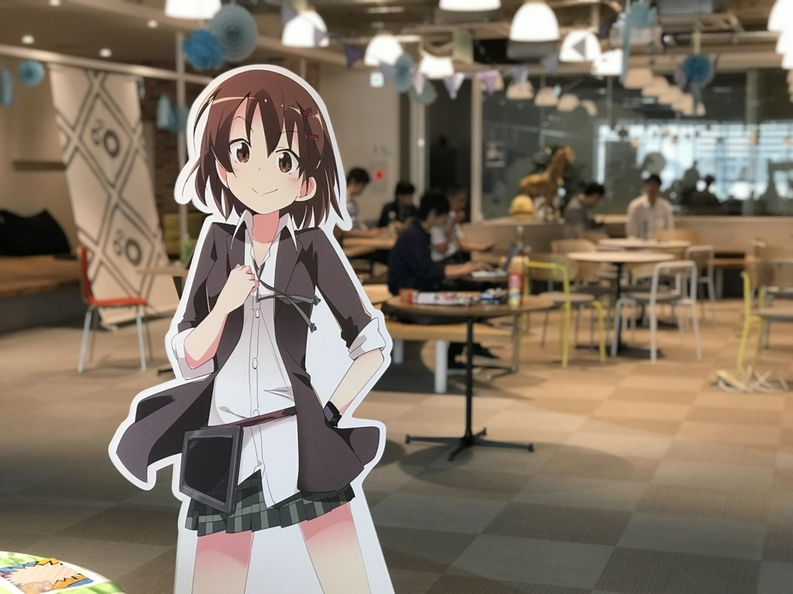
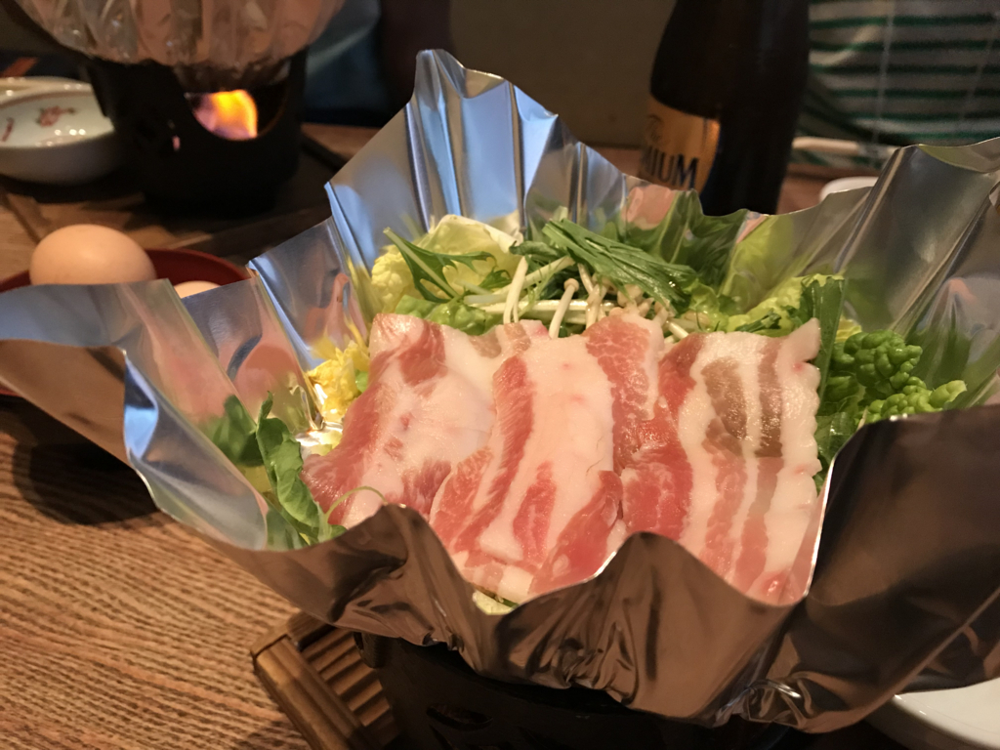

御礼：無事終了！ 2018/06/16 プログラミング生放送勉強会＠サイボウズ株式会社 松山オフィス
公開日：

今年は20名以上のご参加をいただき、ありがとうございました！ なんだかんだ言って、割と集まってくれて一安心。個人的にもなんとか LT の準備ができて、肩の荷が下りた気分です。W 君という後継者を得たので、来年はそのバックアップとして頑張りたいですね～
ゼロからはじめるゲームプログラミング @pegass85 さん
去年に引き続きかな？ 前回は 3D ゲームの基本概念が丁寧に解説されていて、門外漢の自分にもだいぶわかりやすいなーって感心したんですが、今回もそれに劣らず、手取り足取りな感じがよかったです。俺でもゲーム作れそうだなーって思っちゃう。
サンプルソースが用意されていて、手元ですぐに試せるのがいいですね。残念ながらウチには Node.js の環境がなく、ダウンロード＆インストールもアレかなと思いまだ試していないのですが、コードを斜め読みした限りでは結構平易だと思います。
ゲームってフツーのアプリとはちょっといろいろ違ってて、僕みたいなおっさんになると初期投資がしんどくて手が出せないのですが、タマを避けるゲーム程度なら今回学んだことで十分作れそう……。
Windows 10 の診断データを覗いてみよう @msdmairitan さん
結構強引目にお願いしてセッションを引き受けていただきました。ほんとにありがたい……。個人的な興味に加え、今は香川でリモートワークをされているとのことで、学生の参加者の方のロールモデルになればうれしいなってのもあって……どうでしたでしょう？
話の内容は、タイトル通り Windows 10 の診断データを覗いてみようって感じ。会場は Windows 使いじゃない人も多かったみたいで（最近はフロントエンドだけっていう人がだいぶ増えましたねー、そういう人はだいたい Mac な感じ？）、結構マニアックな印象を受けた方も多かったのではないでしょうか。僕は日頃から Windows Insider Preview を触っているので、ｆｍｆｍ～なところも多くて、結構勉強になりました。どんな機能がどれほどの頻度で、どういうシーンで使われているか、どこで離脱しているか、どれだけ時間を要しているのかなんかを調べて、品質の向上や機能の評価・調整に役立てられているんですねぇ。Web の世界ではサーバー（＆クライアントでも）でログ解析するのは当たり前ですが、ネイティブでこれだけガッツリ＆大規模にやってるケースはあまりないんじゃないでしょうか。あと、どんなデータが送信されてるのかっていうのをユーザー側から見られるのは、透明性の観点からも重要だと思います（Web ってプライバシーポリシーを公開して終わり、って感じですよね……
あと、クリップボードのクラウド同期＆履歴って日本で開発してるんですね！ これは個人的にもかなりお勧めな機能なんで、もっとバシバシ使ってほしいです。次期バージョンの目玉機能になると思う。
かなしき だるやなぎちゃん ～海老を獲りに行く話～ @you_and_i
セッションの概要をいただいた時から嫌な予感に背筋が寒くなっていたのですが、まぁ、被害はそれほどでもなかったです。むしろ、海老≒エビデンスを自動で採る方法についてでした。エクセルにスクショを張る仕事……楽しい……。
ちなみに、「かなしき だるやなぎちゃん」というのは、愛媛の絵本作家さんの書いた「かなしきデブ猫ちゃん」が元ネタなのだそう。愛媛新聞で連載されているそうですが、会場にはそもそも愛媛新聞を購読している方がほとんどいなかったという……まぁ、オンライン版も会員じゃないとロクに読めないし、なかなか若い人にはリーチしないよね。
だるやなぎ、がんばれ〜。
— デブ猫ちゃん (@debunekochancom) 2018年6月16日
べつにパクリだなんて騒がないぜ。
でも、ファン増やしてきてくれなー！ https://t.co/OGGmdxaf5U
でも、ネタをパクっても気にせず応援してくれるのはめっちゃ優しいと思いました。子どもできたら買って、読ませてあげたいものだのぅ……。
ちなみに、Snipping Tool のデモで少し手間取っていましたが――
あと、snipping Toolのデモが上手くいかなかったのは、プロジェクター繋いでいたからかも。
— Ｙｏｕ＆Ｉ (@you_and_i) 2018年6月18日
今日仕事で使って見た分には問題ないし。
との由。こういうの、ハマるよね……。
ありがとうございました！
そのほかにも LT に参加してくれた方、ありがとうございました！！ 結構緊張するよね、僕もずっと緊張しっぱなしです。でも、これぐらいの勉強会だと割と気軽に参加できるんじゃないかな？ もっとチャレンジしてくれる人が増えたらうれしいです。
ロングトークは割とガチな話（Twitter に情報公開を求める方法）で、笑うやら、ため息つくやらでしたｗ カネも時間もかかるし、できたらこういうのに無縁な生活が送れたらいいなーと思いました。
最後に、会場を快く貸してくれたサイボウズさんにも感謝申し上げたいです。毎度ありがとうございます。

懇親会は、去年と同じ「銀次郎」さんで。サイボウズさんから徒歩3分かからない利便性と、安定した内容が魅力。参加者が元バイトさんだったようで、世の中狭いなーと思ったり思わなかったり。
それでは、またお会いしましょう。